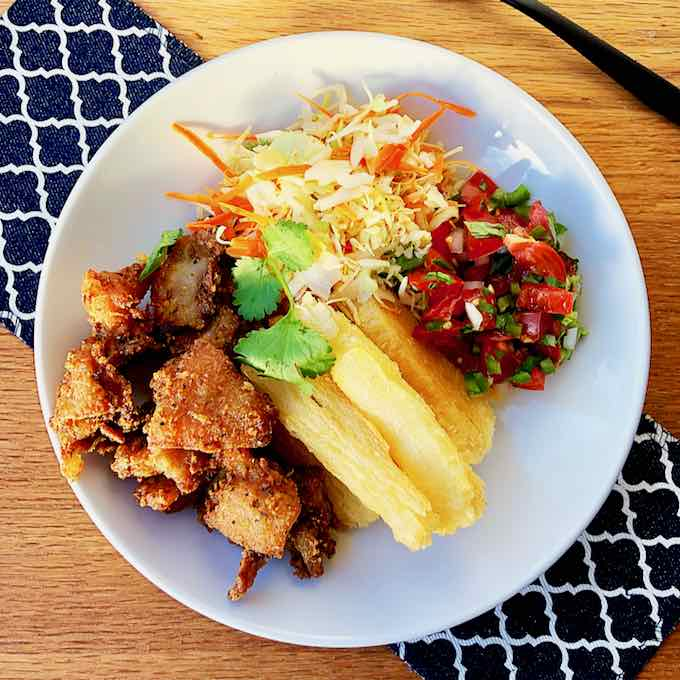

La comida en Honduras es diversa ya que el país tiene muchas culturas que ayudaro a formarlo.
Ingredientes que se pueden encontrar en casi todas las cocinas hondureñas son:
- Mariscos, por sus costas
- Maíz, un cultivo autóctono
Tamales
Relleno de frijoles, vegetales, carne y otros ingredientes, mas generalmente sus bases estan hechas de maíz o arroz. También tiene unaversion mas pequeña llamada tamalitos.
Yuca con Chicharrón
Otro plato típico donde mayormente se usa carne frita de cerdo y la yuca, una planta similar a la papa, donde se mezclan para hacer un plato muy delicioso.
Casabe de Yuca
También llamado casabe, es un tipo de pan común en muchos lugares de latinoamerica. Es hecho con la yuca, en específico la raíz amarga, y se usa su harina donde se usa un comal para poder cocinarlo.
La comida favorita de César es el casabe ya que lo puede guardar por un largo tiempo sin que se dañe.